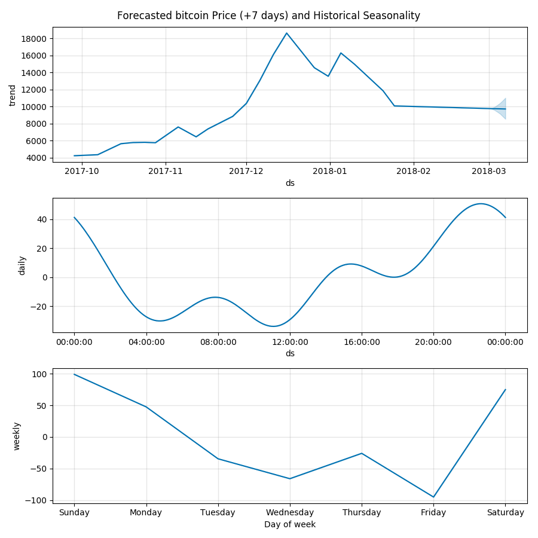

To jump right in, I've found, purely through empirical observations, that price seasonality appears to be a strong indicator for predicting the maginitude of impending volatility, along with the expected price.
In the graphs below, we plot the following:
- Expected price and uncertainty thresholds
- Historical hourly price movement
- Historical daily price movement
This strategy is relatively new to my toolkit, thus it lacks sufficient backtesting, correlation, and covariance methodologies. In any case, I've manged to profit by anticipating impending price fluctuations using the following graphs.
Some cursory observations: It seems that the seasonality subplots are increasingly shifting the left, over time. I believe this is due to other actors utilizing similar strategies. It is clear to me that the local max and local min, while visibly optimal, are not the ideal points in time to make a trade. I've found that the optimal execution time observes a delta of (local_max|local_min)*-0.15, which translates to -9 minutes for day trading (hourly observations) and -3.6 hours for swing trades (daily observations).
Example: Observing Bitcoin's daily plot, it is evident that the price typically rises at 11:00 UTC. In practice, I noticed the upward swing occurred rougly 9 minutes earlier at 10:51 UTC, which makes sense; others are anticipating it as well. I'm not sure what I'm getting at here, other than it's obvious to me that these oscillations are shifting by roughly -15% (time) at the observed intervals. In the future, I will determine the optimal delta (it's most likely not -15%), along with the rate of change the delta experiences.
It would be nice if I had more data to back up my claims, but I just haven't gotten around to it yet. Try it for yourself and please don't hesitate to share your results!
Note: The images were generated ~24H prior to the writing of this post. ~24H later, the price of
DigixDAO has risen
+16%, which aligns with the predicted price.
If you would like to view more, I've included an image
dump of the top 100 coins (and a
.zip). The source code used to generate the graphs can be viewed
here.
